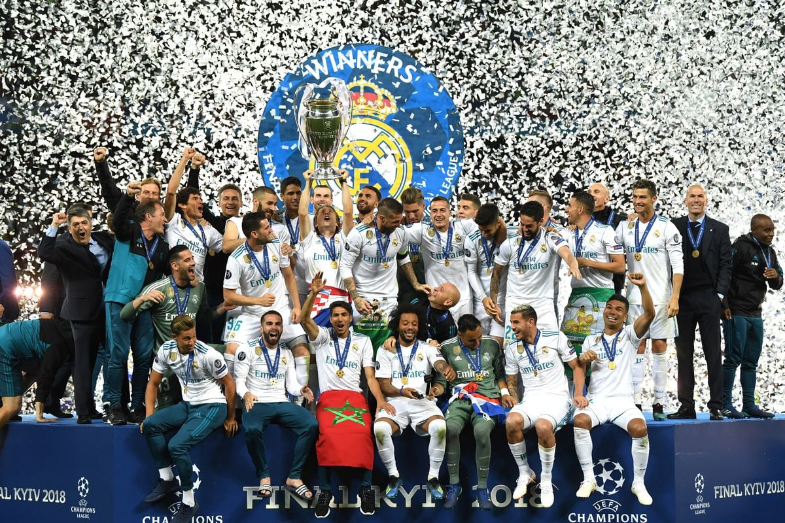

^^^Historiku në Champions League^^^

HISTORIKU
Në futbollin botëror, asnjë kompeticion tjetër klubesh nuk përputhet me popullaritetin dhe tërheqjen
e UEFA Champions League (UCL).
Turneu paraqet skuadrat më të mira nga Evropa që konkurrojnë për trofeun e lakmuar dhe të drejtat e
mburrjes për t'u quajtur "më të mirët e Evropës" çdo vit.
Kampioni në fuqi Real Madrid ka fituar 14 herë UEFA Champions League, duke e bërë atë ekipin më të
suksesshëm në UCL. Klubi italian AC Milan është i radhës me shtatë.
Skuadra gjermane Bayern Munich dhe Liverpooli i Anglisë kanë fituar gjashtë herë secila.